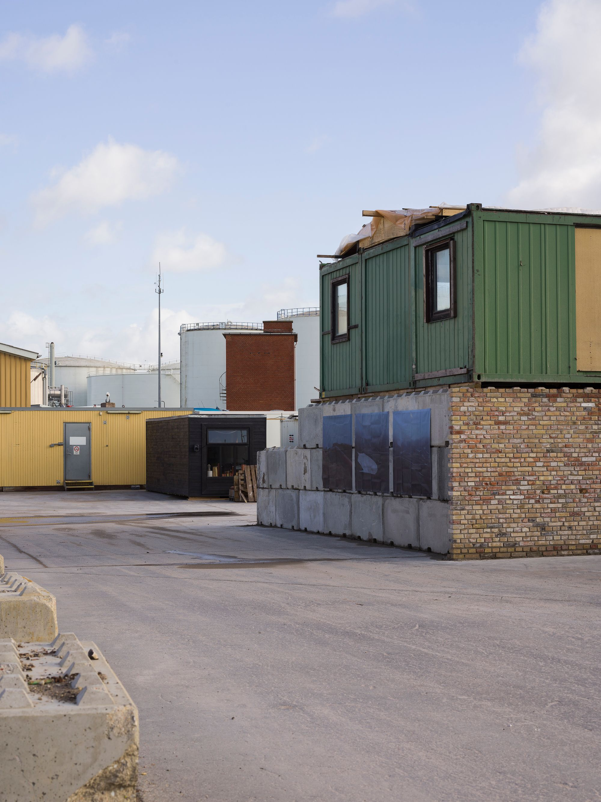
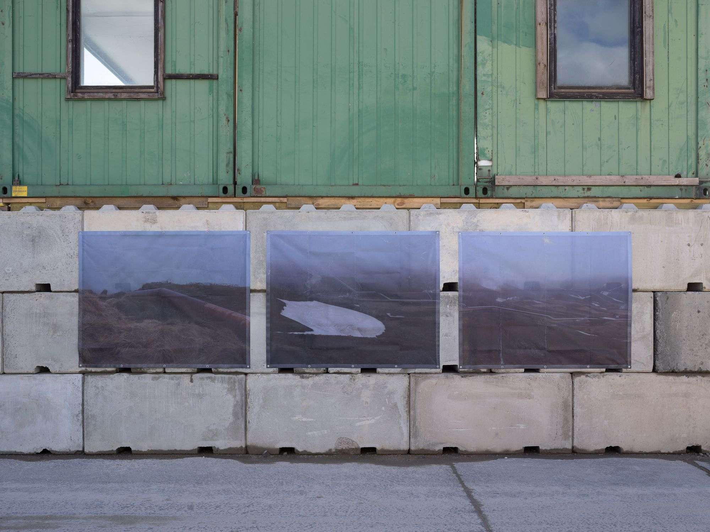
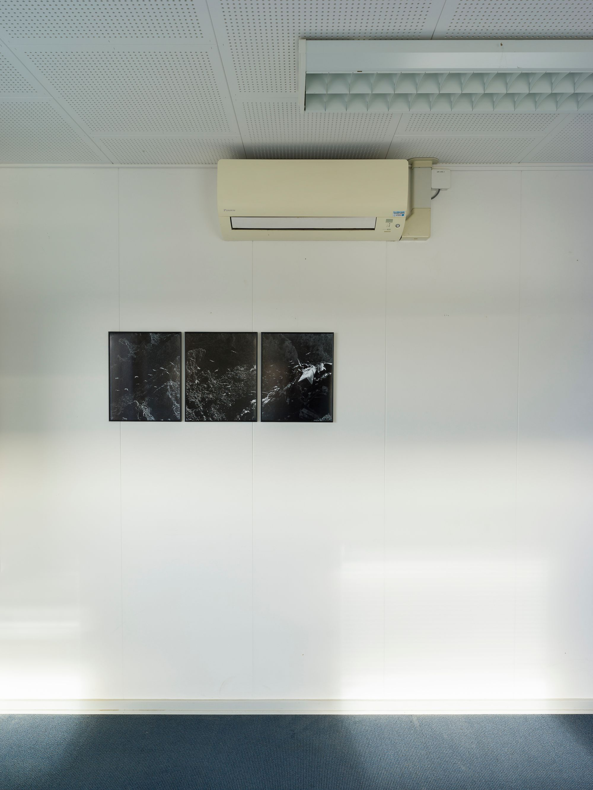
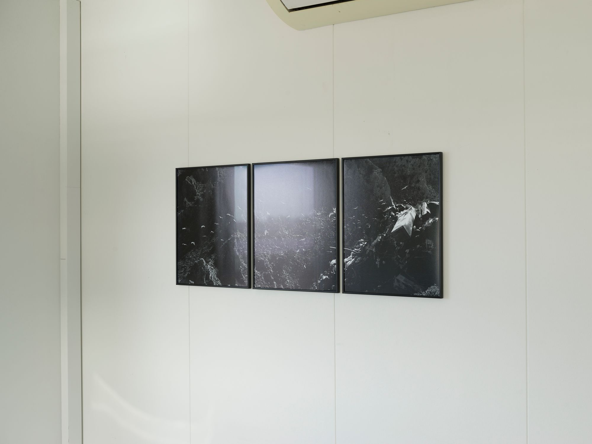
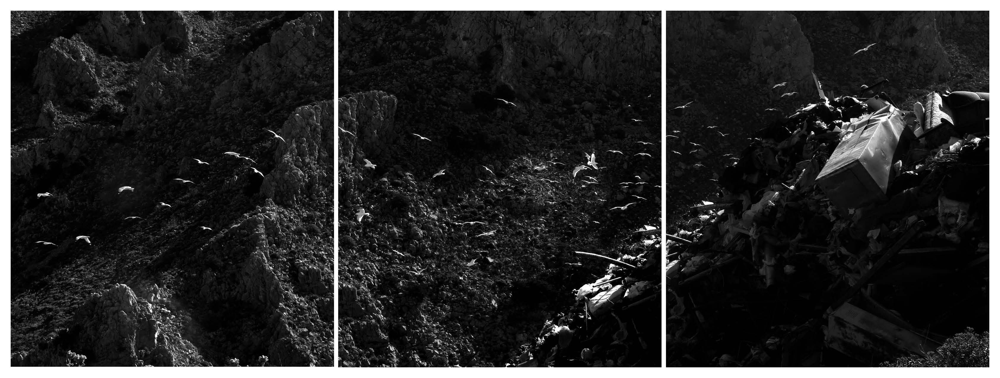

Group exhibition - link
14.10.2023-15.10.2023, gated ressourcestation of Norrecco, at the island Prøvestenen, Copenhagen (DK)

Installation view ’Lines of Heat’, 170x135 cm, print on scaffolding mesh, 2023. Photo by Hampus Berndtson.

Installation view ’Lines of Heat’, 170x135 cm, print on scaffolding mesh, 2023. Photo by Hampus Berndtson.

’Sværm’, 32x40 cm, photographic triptocon, print on paper, 2020. Photo by Hampus Berndtson.

’Sværm’, 32x40 cm, photographic triptocon, print on paper, 2020. Photo by Hampus Berndtson.

’Sværm’, photographic triptocon, 2020.